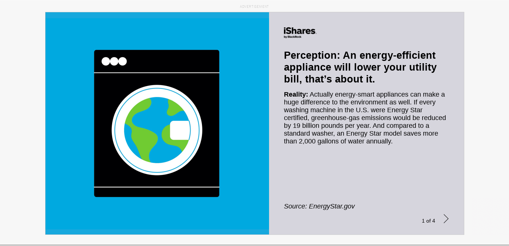
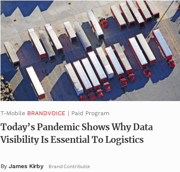
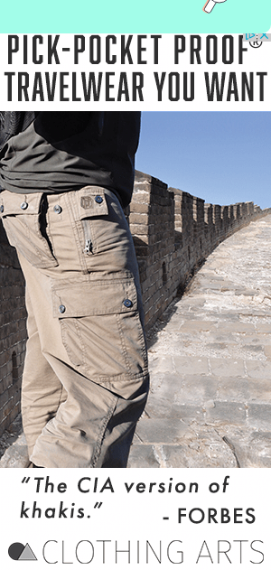
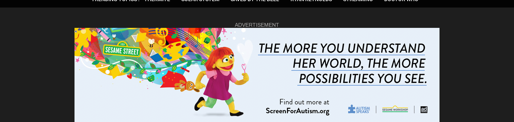
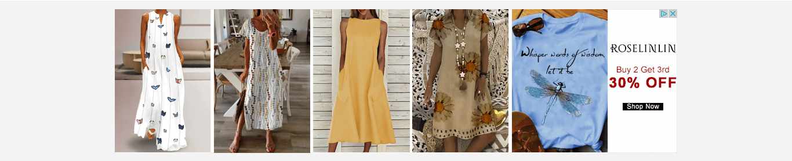
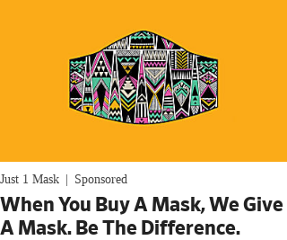
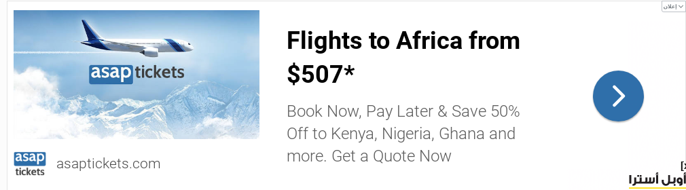
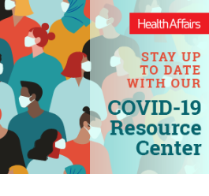
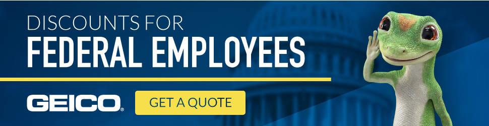

| 1461505 |  | 5.09 | | simple | 0.727 | | useful | 0.636 | | trustworthy | 0.545 | | like_product | 0.364 | | entertaining | 0.182 | | good_design | 0.182 | | bad_design | 0.0909 | | boring | 0.0909 | | clickbait | 0.0909 | | deceptive | 0.0909 |
| | | | - No
- I like these types of ads that inform people how they can help lower pollution and slow global warming
|
| 1461781 |  | 4.60 | | simple | 0.700 | | like_product | 0.500 | | bad_design | 0.400 | | good_design | 0.300 | | useful | 0.300 | | clickbait | 0.200 | | entertaining | 0.200 | | politicized | 0.200 | | trustworthy | 0.200 | | boring | 0.100 | | unclear | 0.100 |
| | | | - its simple and interesting
- Ad looks like absolute standard, with no personality or any characteristics that separate it from any other clickbait website.
|
| 1466420 |  | 5.00 | | simple | 0.700 | | useful | 0.500 | | good_design | 0.400 | | entertaining | 0.300 | | like_product | 0.300 | | clickbait | 0.200 | | politicized | 0.200 | | bad_design | 0.100 | | manipulative | 0.100 | | trustworthy | 0.100 |
| | | | - i am completely neutral towards this ad
- No
- While "The CIA version of kakhis" made me laugh, I doubt it's true
|
| 1466493 |  | 4.70 | | good_design | 0.600 | | entertaining | 0.500 | | useful | 0.500 | | like_product | 0.300 | | simple | 0.300 | | deceptive | 0.200 | | trustworthy | 0.200 | | dislike_product | 0.100 | | manipulative | 0.100 | | unclear | 0.100 |
| - Medical Services and Prescriptions
| | | - The actual style of the ad is gorgeous and I actually love her character as an autistic person but I despise autism speaks so it makes me angry seaseme street is associating with them, and lowers my opinion of Seaseme Street
- If I wouldn't have clearly looked at the ad, I would not have seen that it is screening for autism, I thought it was for Sesame Street so it is a bit deceptive in that aspect.
- I am autistic so I really enjoyed the character Julia and what the Autistic Self Advocacy Network (ASAN) was trying to do when they first revealed them. However, I despise autism speaks and how they treat people on the spectrum like a disease, and wish that sesame street never let them get their filthy claws into that project.
|
| 1467019 | | 4.70 | | simple | 0.600 | | entertaining | 0.500 | | good_design | 0.500 | | like_product | 0.500 | | trustworthy | 0.500 | | boring | 0.200 | | dislike_product | 0.200 | | useful | 0.200 | | clickbait | 0.100 | | deceptive | 0.100 | | manipulative | 0.100 | | politicized | 0.100 |
| | | | |
| 1467912 |  | 5.30 | | like_product | 0.600 | | good_design | 0.400 | | simple | 0.400 | | trustworthy | 0.400 | | useful | 0.400 | | entertaining | 0.200 | | bad_design | 0.100 | | deceptive | 0.100 | | dislike_product | 0.100 | | manipulative | 0.100 |
| - Household Products
- Self-Link
| | | - i always appreciate a coupon or saving money
- no
- This ad overall has everything I would like in an ad.
|
| 1468744 | | 5.10 | | simple | 0.900 | | trustworthy | 0.700 | | useful | 0.500 | | like_product | 0.300 | | good_design | 0.200 | | manipulative | 0.200 | | entertaining | 0.100 |
| | | | - Since they make money off blood in our for-profit healthcare system, I should be compensated for donating. It's exploitation to be a charity when taking and a business when giving/selling. Also, they could stop being homophobic any time.
|
| 1469324 |  | 5.00 | | good_design | 0.700 | | like_product | 0.700 | | simple | 0.400 | | useful | 0.400 | | entertaining | 0.300 | | bad_design | 0.100 | | boring | 0.100 | | clickbait | 0.100 | | deceptive | 0.100 |
| | | | - Simple and to the point on why it wants your attention.
- I just think with ads like these you need to go to reviews of the company to see the reality.
- Nice clothes, looks like a real store.
|
| 1470532 |  | 5.00 | | simple | 0.600 | | like_product | 0.400 | | trustworthy | 0.400 | | good_design | 0.300 | | boring | 0.200 | | useful | 0.200 | | bad_design | 0.100 | | deceptive | 0.100 | | politicized | 0.100 |
| | | | |
| 1470998 |  | 4.73 | | simple | 0.727 | | good_design | 0.455 | | like_product | 0.273 | | useful | 0.273 | | bad_design | 0.182 | | trustworthy | 0.182 | | clickbait | 0.0909 | | deceptive | 0.0909 | | dislike_product | 0.0909 | | politicized | 0.0909 |
| | | | - I don't really get the part that says "Just Mask Sponsored" - it makes that part of the ad look poorly designed because I can't tell what the name of the company or brand actually is.
- It has a good cause but do not know if it can be trusted
- The background is just about a perfect match to my favorite color.
- It really didn't take long for masks to become a "thing". Too bad people don't just wear them.
|
| 1472434 | | 5.30 | | simple | 0.900 | | like_product | 0.600 | | useful | 0.500 | | entertaining | 0.300 | | bad_design | 0.200 | | boring | 0.100 | | clickbait | 0.100 | | good_design | 0.100 | | trustworthy | 0.100 |
| | | | |
| 1474786 | | 3.80 | | politicized | 0.600 | | good_design | 0.400 | | simple | 0.400 | | boring | 0.300 | | entertaining | 0.300 | | like_product | 0.300 | | trustworthy | 0.300 | | clickbait | 0.200 | | dislike_product | 0.200 | | useful | 0.200 | | deceptive | 0.100 | | manipulative | 0.100 | | unclear | 0.100 |
| | | | |
| 1475331 |  | 4.80 | | simple | 0.500 | | useful | 0.500 | | boring | 0.300 | | trustworthy | 0.300 | | bad_design | 0.200 | | clickbait | 0.200 | | entertaining | 0.200 | | like_product | 0.200 | | deceptive | 0.100 | | good_design | 0.100 | | manipulative | 0.100 | | politicized | 0.100 |
| | | | |
| 1476889 |  | 5.40 | | good_design | 0.600 | | simple | 0.600 | | useful | 0.600 | | like_product | 0.500 | | deceptive | 0.200 | | trustworthy | 0.200 | | clickbait | 0.100 | | entertaining | 0.100 | | politicized | 0.100 |
| - Scientific Journal
- Self-Link
| | | - It tells you nothing, are they experts, why should I got to their site to learn about Covid
|
| 1477704 |  | 4.30 | | good_design | 0.500 | | politicized | 0.500 | | simple | 0.400 | | dislike_product | 0.200 | | entertaining | 0.200 | | like_product | 0.200 | | trustworthy | 0.200 | | boring | 0.100 | | deceptive | 0.100 | | manipulative | 0.100 |
| | | | - I see too many Geico ads already
- The company is well-know so I trust the advertisement but I also feel like they're a little gimmicky. If I were looking for new insurances, the discount for federal employees part might draw me in.
|